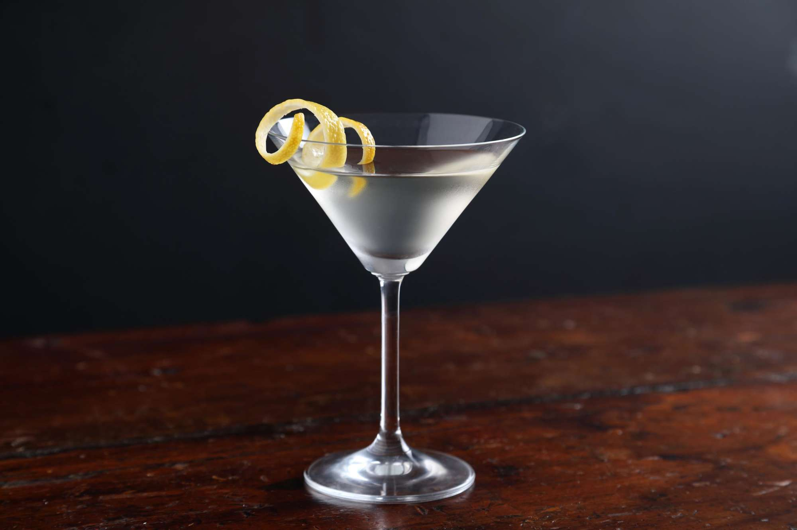
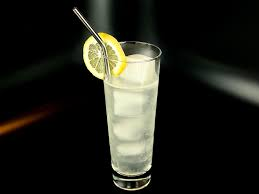
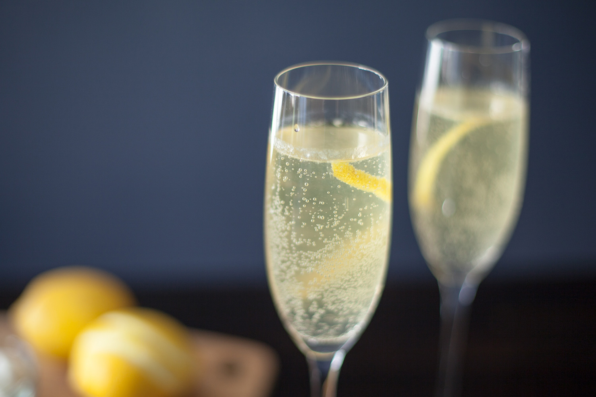

Pour gin and dry vermouth in cocktail shaker with ice
Stir well, then strain into chilled martini glass
Zest the lemon peel and garnish by twisting it in a spiral

Tom Collins
Glass:Highball
Ingredients:
50ml gin
25ml lemon juice
25ml sugar syrup
125ml chilled soda water
Lime wedge to garnish
Method:
Build the drink over plenty of ice in a Collins glass, stir gently and garnish with a slice of lemon
Garnish with a lime wedge
An alternative twist on the classic recipe is to gently muddle a hadnful of raspberries in the bottom of the empty glass, then add ice and proceed as normal

French 75
Glass:Champagne Flute
Ingredients:
1 tbsp lemon juice
1 tsp sugar syrup
50ml gin
Champagne
Ice
Lemon Zest
Method:
Pour the lemon juice, sugar syrup and gin into a cocktail shaker then fill up with ice
Shake well then strain into a champagne flute
Top with a little champagne, leave to settle, and fill up with more champagne
Stir gently with a cocktail stirrer then garnish with a strip of lemon zest

English Garden
Glass:Martini glass
Ingredients:
25ml Cucumber Gin
20ml Lime Juice
50ml Apple juice
20ml Sugar syrup
1 leaf mint
1 slice of cucumber
Method:
Fill a cocktail shaker with ice
Add the gin, apple juice, lime juice and sugar syrup to the shaker and shake until cold